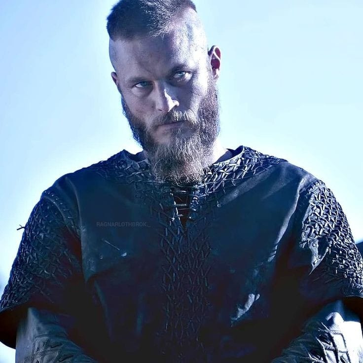

We live to fight another day
Vikings[a] is the modern name given to seafaring people primarily[3] from Scandinavia (present-day Denmark, Norway and Sweden),[4][5][6] who from the late 8th to the late 11th centuries raided, pirated, traded and settled throughout parts of Europe.[7][8][9] They also voyaged as far as the Mediterranean, North Africa, the Middle East, and North America. In some of the countries they raided and settled in, this period is popularly known as the Viking Age, and the term "Viking" also commonly includes the inhabitants of the Scandinavian homelands as a collective whole. The Vikings had a profound impact on the Early medieval history of Scandinavia, the British Isles, France, Estonia, and Kievan Rus'.[10] Expert sailors and navigators aboard their characteristic longships, Vikings established Norse settlements and governments in the British Isles, Ireland, the Faroe Islands, Iceland, Greenland, Normandy, the Baltic coast, and along the Dnieper and Volga trade routes in what is now European Russia, Belarus[11] and Ukraine[12] (where they were also known as Varangians). The Normans, Norse-Gaels, Rus' people, Faroese and Icelanders emerged from these Norse colonies. The Vikings also voyaged to Constantinople, Iran,[13] and Arabia.[14] They were the first Europeans to reach North America, briefly settling in Newfoundland (Vinland). While spreading Norse culture to foreign lands, they simultaneously brought home slaves, concubines and foreign cultural influences to Scandinavia, profoundly influencing the genetic[15] and historical development of both. During the Viking Age the Norse homelands were gradually consolidated from smaller kingdoms into three larger kingdoms: Denmark, Norway and Sweden.[16] The Vikings spoke Old Norse and made inscriptions in runes. For most of the period they followed the Old Norse religion, but later became Christians. The Vikings had their own laws, art and architecture. Most Vikings were also farmers, fishermen, craftsmen and traders. Popular conceptions of the Vikings often strongly differ from the complex, advanced civilisation of the Norsemen that emerges from archaeology and historical sources. A romanticised picture of Vikings as noble savages began to emerge in the 18th century; this developed and became widely propagated during the 19th-century Viking revival.[17][18] Perceived views of the Vikings as violent, piratical heathens or as intrepid adventurers owe much to conflicting varieties of the modern Viking myth that had taken shape by the early 20th century. Current popular representations of the Vikings are typically based on cultural clichés and stereotypes, complicating modern appreciation of the Viking legacy. These representations are rarely accurate—for example, there is no evidence that they wore horned helmets, a costume element that first appeared in Wagnerian opera.
Captions
I have no interest in peace. Peace is a dirty word.
How the little piggies will grunt when they hear how the old boar suffered.

When the spring comes, and my blood heats up, I want nothing more than to raid and fight.

I was hoping that I could cheat the fates

FOR MORE VIDEOS AND POSTS
khalil.bounouala1@gmail.com